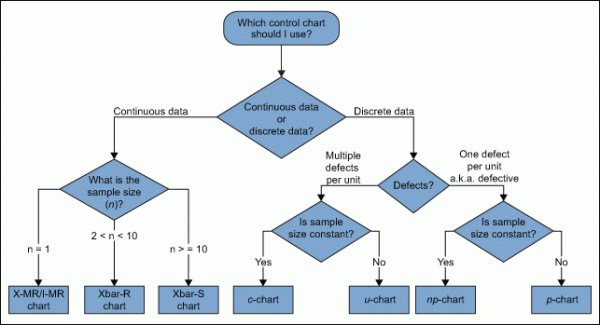

Pahlow's Control Chart Helper
Days until you can hire me or I do my own thing, ideally the ladder!
Control Chart Flow

What rules will this program identify for you?
- Rule 1 – One point beyond the 3 σ control limit:
- Rule 2 – Eight or more points on one side of the centerline without crossing:
- Rule 3 – Four out of five points in zone B or beyond
- Rule 4 – Six points or more in a row steadily increasing or decreasing
- Rule 5 – Two out of three points in zone A
- Rule 6 – 14 points in a row alternating up and down
- (DOES NOT DO, USE YOUR EYEBALLS) Rule 7 – Any noticeable/predictable pattern, cycle, or trend
How to tell if your data is Discreet or Continous data?
To determine if data is discrete or continuous, consider whether the data values are countable (discrete) or measurable and can take on any value within a
range (continuous). Discrete data usually represents counts or categories, while continuous data can vary continuously
Data Characteristics: